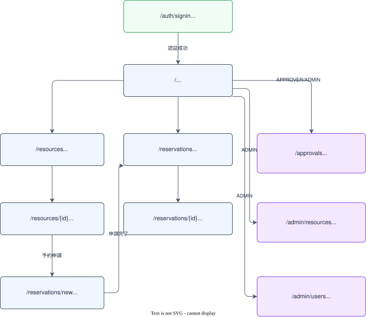

画面仕様書
画面一覧
| # |
パス |
画面名 |
主な機能 |
アクセス権限 |
| 1 |
/ |
ダッシュボード |
マイ予約件数・承認待ち件数の集計表示 |
全ロール（要認証） |
| 2 |
/resources |
リソース一覧 |
カテゴリ別一覧・並び替え・空き確認日時入力 |
全ロール（要認証） |
| 3 |
/resources/{id} |
リソース詳細 |
詳細情報・予約カレンダー表示 |
全ロール（要認証） |
| 4 |
/reservations/new |
予約申請フォーム |
リソース・日時・目的を入力して申請 |
全ロール（要認証） |
| 5 |
/reservations |
マイ予約一覧 |
自分の予約一覧・ステータスバッジ |
全ロール（要認証） |
| 6 |
/reservations/{id} |
予約詳細 |
詳細表示・編集導線・キャンセル操作 |
全ロール（本人・APPROVER・ADMIN） |
| 7 |
/approvals |
承認待ち一覧 |
承認待ち予約一覧・承認/却下操作 |
APPROVER / ADMIN のみ |
| 8 |
/admin/resources |
リソース管理 |
リソース登録・編集・有効/無効切替 |
ADMIN のみ |
| 9 |
/admin/users |
ユーザー管理 |
ユーザー一覧・ロールバッジ・部署名表示 |
ADMIN のみ |
| 10 |
/auth/signin |
サインイン |
Cognito OAuth2 ソーシャルログインでサインイン（ADR-008） |
未認証のみ |
| 11 |
/reservations/{id}/edit |
予約編集 |
日時・目的・参加人数を変更（PENDING のみ・リソース変更不可） |
本人（MEMBER / APPROVER）のみ |
画面遷移図

アクセス制御：未認証ユーザーが要認証画面にアクセスした場合は /auth/signin にリダイレクトする。権限不足のロールが /approvals / /admin/* にアクセスした場合は 403 エラー画面を表示する。
§共通レイアウト・ナビゲーション
共通レイアウト構造
全認証済み画面（/auth/signin を除く）は以下のレイアウトを共有する。
┌─────────────────────────────────────────┐
│ ヘッダー（BookFlow ロゴ ／ ユーザー名・ロールバッジ ／ サインアウトボタン） │
├──────────┬──────────────────────────────┤
│ │ │
│ サイド │ メインコンテンツエリア │
│ ナビ │ │
│ │ │
└──────────┴──────────────────────────────┘
ヘッダー
| 要素 |
内容 |
| ロゴ |
「BookFlow」テキスト or ロゴマーク。クリックで / へ遷移 |
| ユーザー情報 |
サインイン中のユーザー名・ロールバッジ（MEMBER / APPROVER / ADMIN） |
| サインアウトボタン |
クリックで POST /api/auth/signout を実行後 /auth/signin へリダイレクト |
サイドナビゲーション（ロール別表示制御）
| メニュー項目 |
遷移先 |
MEMBER |
APPROVER |
ADMIN |
| ダッシュボード |
/ |
✅ |
✅ |
✅ |
| リソース一覧 |
/resources |
✅ |
✅ |
✅ |
| マイ予約 |
/reservations |
✅ |
✅ |
✅ |
| 承認待ち一覧 |
/approvals |
❌（非表示） |
✅ |
✅ |
| リソース管理 |
/admin/resources |
❌（非表示） |
❌（非表示） |
✅ |
| ユーザー管理 |
/admin/users |
❌（非表示） |
❌（非表示） |
✅ |
注意：メニュー項目の非表示はナビゲーション上の UI 制御。サーバーサイドでも権限チェックを行い、不正アクセスには 403 を返す（フロントの制御だけに依存しない）。
§認証
/auth/signin（サインイン）
実装注記（ADR-008 適用）：ADR-008（Status: Accepted）により Cognito OAuth2 ソーシャルログインを採用。以下の「メールアドレス/パスワードフォーム」記述は廃止済み。Better Auth の signIn.social({ provider: 'cognito' }) を使用した単一ボタン方式を実装済み。
画面概要
未認証ユーザー専用のサインイン画面。Better Auth + cognito-local（本番は Amazon Cognito）を経由した OAuth2 フローでサインインする。
UI 要素
| 要素 |
説明 |
| サインインボタン |
クリックで Cognito OAuth2 フローを開始（authClient.signIn.social({ provider: 'cognito' })） |
| 開発用ロール別ログインボタン |
開発環境限定（NODE_ENV !== 'production' でのみ表示）。MEMBER / APPROVER / ADMIN の各シードユーザーで cognito-local に直接ログインする（devLoginAction → InitiateAuth → IdToken を httpOnly Cookie dev-id-token に保存）。本番ビルドには含まれない |
バリデーション
Cognito 側で認証を処理するため、フォームバリデーションは不要。認証失敗時は Cognito のエラーが返る。
画面フロー
- サインインボタンクリック → Better Auth 経由で Cognito OAuth2 認可エンドポイントへリダイレクト
- Cognito 認証完了 → コールバック URL（
/）へリダイレクト
- 認証失敗 → Cognito エラーページまたは
/auth/signin に戻る
§リソース
/resources（リソース一覧、空き確認）
UI 要素
| 要素 |
説明 |
| カテゴリフィルター |
「すべて」／「会議室」／「備品」／「社用車」のタブまたはセレクト |
| 並び替えセレクト |
「登録日時が古い順」（デフォルト）／「登録日時が新しい順」／「名称順（昇順・降順）」／「定員順（昇順・降順）」の6択。選択値を GET /api/resources の sort パラメータとして付与する |
| リソースカード一覧 |
名称・カテゴリ・場所・定員・承認フロー要否を表示。is_active = false のリソースは MEMBER / APPROVER には非表示（ADMIN はグレーアウトして表示） |
| 空き確認フォーム |
開始日時・終了日時の入力欄。入力後にリソース一覧を再取得し、当該時間帯に空きのあるリソースのみを表示する（占有予約のあるリソースは一覧から除外。GET /api/resources の from/to フィルタ仕様に準拠）。絞り込み中は対象期間と件数のメッセージを表示 |
| 「詳細を見る」リンク |
リソース詳細（/resources/{id}）へ遷移 |
| ページネーション |
page/size 方式（デフォルト 20 件/ページ） |
/resources/{id}（リソース詳細）
UI 要素
| 要素 |
説明 |
| リソース情報 |
名称・カテゴリ・場所・定員・説明・承認フロー要否 |
| 空き状況リスト |
当日〜7 日後の占有時間帯（status IN ('PENDING', 'APPROVED') の予約。GET /api/resources/{id}/availability で取得）をリスト表示。占有なしの場合は「予約はありません」メッセージ |
| 「このリソースを予約する」ボタン |
予約申請フォーム（/reservations/new?resourceId={id}）へ遷移。is_active = false のリソースでは非表示 |
/admin/resources（リソース管理、ADMIN）
アクセス制御：ADMIN のみアクセス可。他ロールがアクセスした場合は 403 エラー画面を表示する。
UI 要素
| 要素 |
説明 |
| 「新規登録」ボタン |
リソース登録フォームを表示（モーダルまたはページ内フォーム） |
| リソース一覧テーブル |
全リソース（is_active の状態に関わらず）を表示 |
| 有効/無効トグル |
is_active を切り替える。PATCH /api/resources/{id}/status を呼び出す |
| 「編集」ボタン |
選択リソースの情報を編集するフォームを表示 |
登録・編集フォーム入力項目
| フィールド |
型 |
必須 |
| 名称 |
テキスト |
✅ |
| カテゴリ |
セレクト（会議室／備品／社用車） |
✅ |
| 定員 |
数値 |
❌ |
| 場所 |
テキスト |
❌ |
| 説明 |
テキストエリア |
❌ |
| 承認フロー要否（requires_approval） |
チェックボックス |
✅ |
| 有効（is_active） |
チェックボックス |
✅ |
§予約
/reservations/new（予約申請フォーム）
UI 要素
| 要素 |
説明 |
| リソース選択 |
セレクトボックス（GET /api/resources から取得した有効リソース一覧） |
| 開始日時 |
日付時刻入力欄（必須） |
| 終了日時 |
日付時刻入力欄（必須） |
| 利用目的 |
テキスト入力欄（必須） |
| 参加人数 |
数値入力欄（任意） |
| 「申請する」ボタン |
フォーム送信 |
/resources/{id} からの遷移時は resourceId をクエリパラメータ（?resourceId={id}）で受け取り、リソース選択欄に初期値として設定する。
バリデーション
| ルール |
条件 |
| リソース必須 |
リソース未選択は申請不可 |
| 開始・終了日時必須 |
両方の入力が必要 |
| 終了 > 開始 |
終了日時は開始日時より後であること |
| 重複予約 |
申請後に 409 Conflict が返された場合、「指定した時間帯は既に予約が入っています」を表示 |
申請後フロー
- 申請成功 → マイ予約一覧（
/reservations）へリダイレクト
requires_approval = false のリソース → ステータスは APPROVED（即時確定）requires_approval = true のリソース → ステータスは PENDING（承認待ち）
/reservations（マイ予約一覧）
UI 要素
| 要素 |
説明 |
| ステータスフィルター |
「すべて」／「承認待ち（PENDING）」／「承認済み（APPROVED）」／「却下（REJECTED）」／「キャンセル済み（CANCELLED）」のタブ |
| 予約一覧テーブル |
リソース名・日時・目的・ステータスバッジを表示 |
| ステータスバッジ |
PENDING=黄・APPROVED=緑・REJECTED=赤・CANCELLED=グレー |
| 「詳細」リンク |
予約詳細（/reservations/{id}）へ遷移 |
| ページネーション |
page/size 方式（デフォルト 20 件/ページ） |
ADMIN は全ユーザーの予約一覧を閲覧できる（フィルターに申請者を絞る UI を追加してもよい）。
/reservations/{id}（予約詳細）
UI 要素
| 要素 |
説明 |
| 予約情報 |
リソース名・日時（開始〜終了）・目的・参加人数・ステータスバッジ |
| 編集ボタン |
PENDING の予約かつ申請者本人の場合に表示。予約編集画面（/reservations/{id}/edit）へ遷移 |
| キャンセルボタン |
PENDING または APPROVED の予約に対して表示。クリック後に確認ダイアログを表示 |
アクセス制御
| ロール |
閲覧可能な予約 |
| MEMBER |
自分の予約のみ |
| APPROVER |
すべての予約 |
| ADMIN |
すべての予約 |
他人の予約に MEMBER がアクセスした場合は 403 エラーを表示する。キャンセル操作は申請者本人または ADMIN のみ可能。編集操作は申請者本人（MEMBER / APPROVER）のみ可能。
/reservations/{id}/edit（予約編集）
UI 要素
| 要素 |
説明 |
| 開始日時 |
日付時刻入力欄（必須・現在値を初期表示） |
| 終了日時 |
日付時刻入力欄（必須・現在値を初期表示） |
| 利用目的 |
テキスト入力欄（必須・現在値を初期表示） |
| 参加人数 |
数値入力欄（任意・現在値を初期表示） |
| リソース |
変更不可。現在のリソース名を読み取り専用で表示 |
| 「更新する」ボタン |
フォーム送信（PUT /api/reservations/{id}） |
| 「戻る」リンク |
予約詳細（/reservations/{id}）へ戻る |
バリデーション
| ルール |
条件 |
| 開始・終了日時必須 |
両方の入力が必要 |
| 終了 > 開始 |
終了日時は開始日時より後であること |
| 重複予約 |
更新後に 409 Conflict が返された場合、「指定した時間帯は既に予約が入っています」を表示 |
更新後フロー
- 更新成功 → 予約詳細（
/reservations/{id}）へリダイレクト
アクセス制御
| 条件 |
動作 |
PENDING 以外の予約 |
422 エラー（API が返す） |
| 申請者本人以外 |
403 エラー（API が返す） |
| ADMIN |
編集不可（権限マトリクス上 PUT /api/reservations/{id} は ADMIN 不可） |
§承認
/approvals（承認待ち一覧、APPROVER / ADMIN）
アクセス制御：APPROVER / ADMIN のみアクセス可。MEMBER がアクセスした場合は 403 エラー画面を表示する。
表示データの可視範囲
| ロール |
表示対象 |
| APPROVER |
自分が担当する（approver_id = 自分）status = 'PENDING' のステップのみ |
| ADMIN |
すべての status = 'PENDING' のステップ |
UI 要素
| 要素 |
説明 |
| 承認待ち一覧テーブル |
リソース名・申請者名・利用開始〜終了日時・利用目的・申請日時を表示 |
| 承認ボタン |
クリック後に確認ダイアログを表示。コメント入力欄（任意）とともに POST /api/approvals/{stepId}/approve を実行 |
| 却下ボタン |
クリック後に確認ダイアログを表示。コメント入力欄（必須）とともに POST /api/approvals/{stepId}/reject を実行 |
| コメント入力欄 |
承認時は任意・却下時は必須。却下時に空欄のまま送信しようとした場合はバリデーションエラー（「却下理由を入力してください」） |
| 操作後の更新 |
承認・却下が成功した後、一覧を再取得して表示を更新する（当該ステップは PENDING でなくなるため一覧から消える） |
§ユーザー・部署
/（ダッシュボード）
UI 要素
| 要素 |
表示対象ロール |
説明 |
| マイ予約サマリカード（承認待ち） |
全ロール |
自分の status = 'PENDING' の予約件数 |
| マイ予約サマリカード（承認済み） |
全ロール |
自分の status = 'APPROVED' の予約件数 |
| 承認待ち件数カード |
APPROVER / ADMIN |
自分が担当する approval_steps.status = 'PENDING' の件数 |
| 「予約を申請する」ボタン |
全ロール |
/reservations/new へ遷移 |
| 「マイ予約を見る」リンク |
全ロール |
/reservations へ遷移 |
データ取得
- マイ予約件数：
GET /api/reservations?status=PENDING / GET /api/reservations?status=APPROVED の totalElements を使用
- 承認待ち件数：
GET /api/approvals/pending のレスポンス配列の長さ（APPROVER / ADMIN のみ）
/admin/users（ユーザー管理、ADMIN）
アクセス制御：ADMIN のみアクセス可。他ロールがアクセスした場合は 403 エラー画面を表示する。
UI 要素
| 要素 |
説明 |
| ユーザー一覧テーブル |
名前・メールアドレス・ロールバッジ・部署名を表示 |
| ロールバッジ |
MEMBER=グレー・APPROVER=青・ADMIN=紫 |
| ページネーション |
page/size 方式（デフォルト 20 件/ページ） |
ロール変更機能はベース実装の対象外（拡張課題）。ユーザー管理画面は閲覧専用。